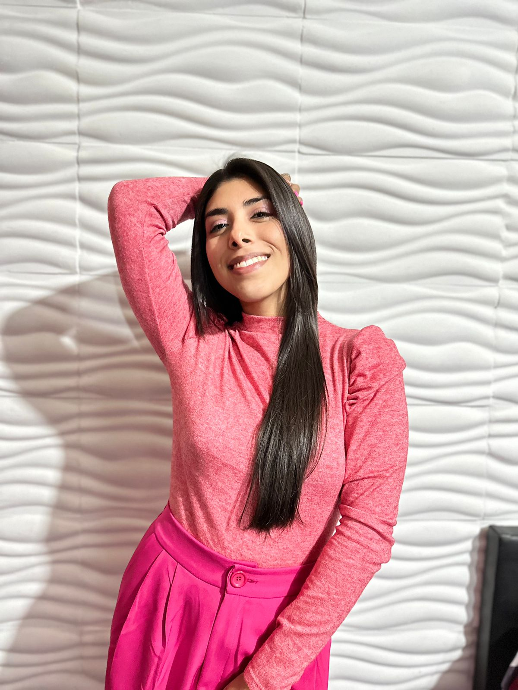
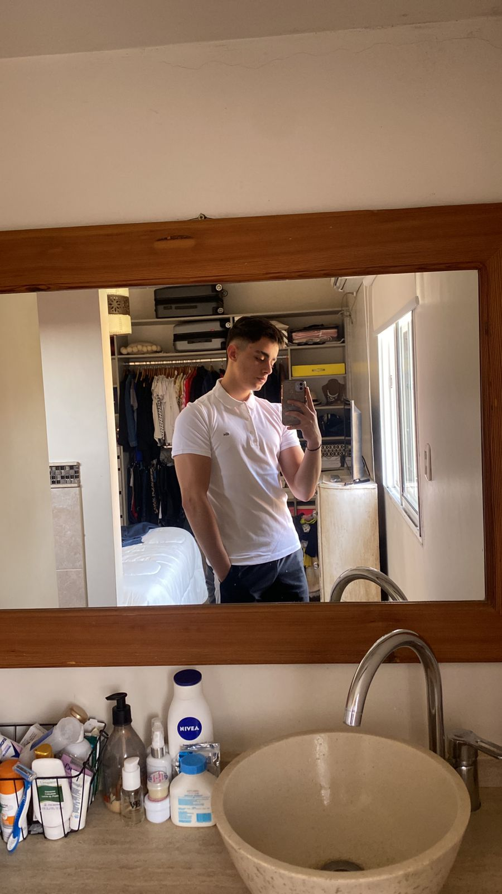

Dana Rocío Díaz
24 años. Profe de yoga y estudiante de programación
Emiliano Gasco
24 años. Estado civil: soltero (el dni dice así). Agnóstico, alcohólico y drogadicto

Bautista Arias
18 años. Amigos, gym y futbol.
Matías Rossi
29 años. No tengo descripción, soy lo que soy.
Martina San Roman
19 años. Me gusta el fulbo. Tengo depresión.
Leandro Cudmani
27 años. Hobby: entrenar, jugar fútbol, salir con amigos. Estudiante RollingCode.

Natalia Aguirre
26 años. Maquilladora profesional, me gusta escuchar música.